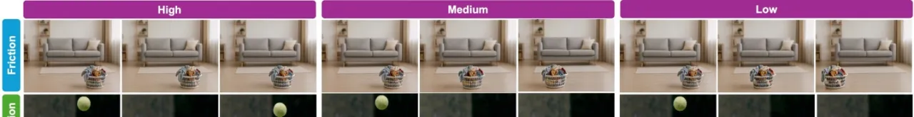
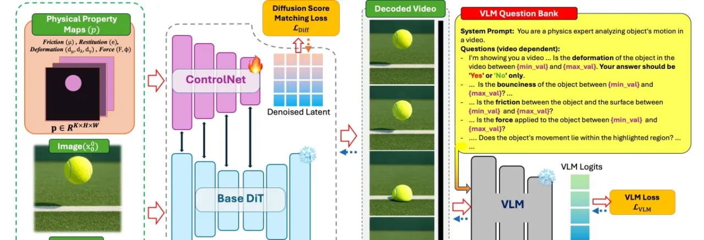
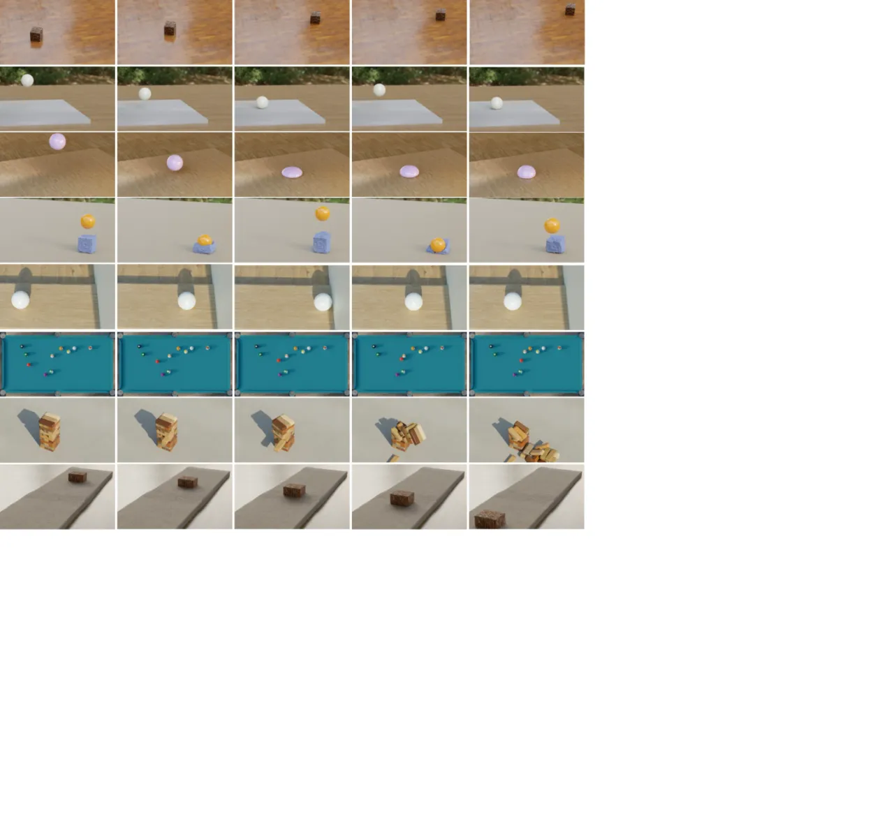
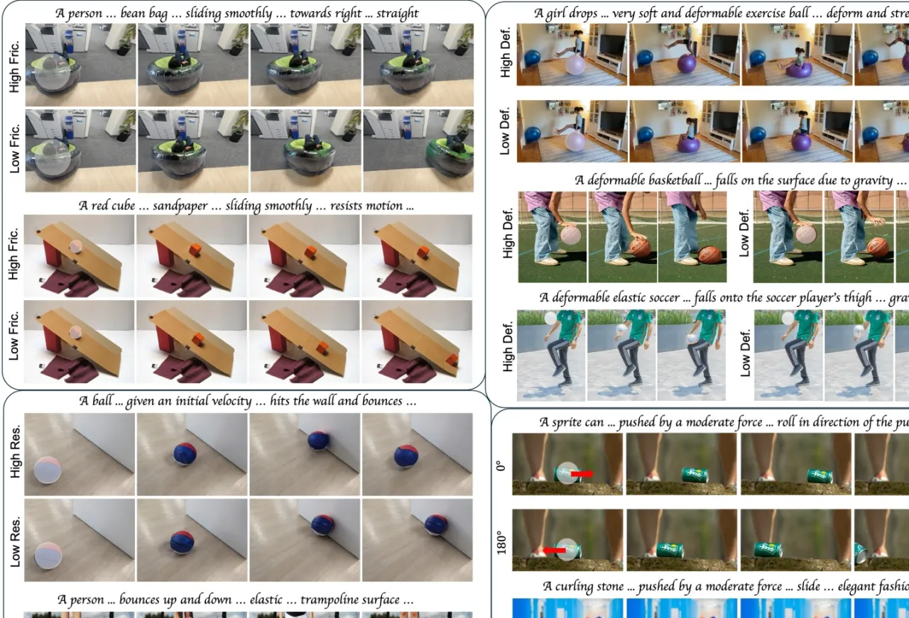
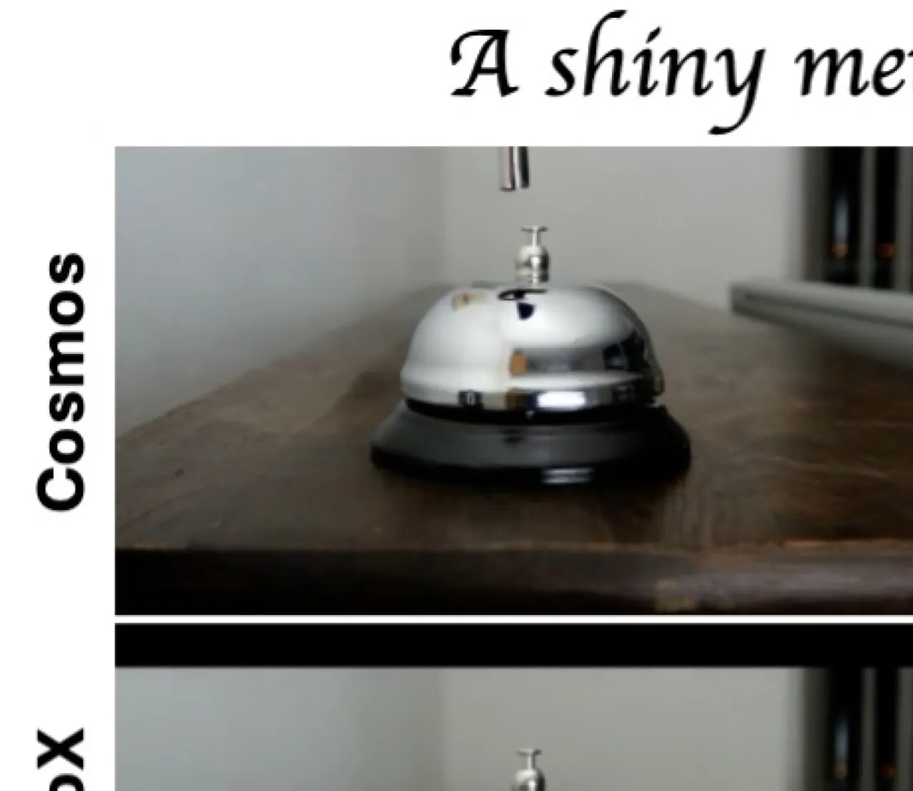

PhyCo 是首个将大规模物理仿真数据集、ControlNet 物理属性条件调节，以及 VLM 奖励优化三者融合的视频生成框架。该框架在不依赖推理期仿真器的前提下，实现了对摩擦力、弹性系数、形变参数和外力方向等物理属性的连续可控生成，显著提升了生成视频的物理真实性。
当前视频扩散模型虽然在外观合成上取得了显著进展，但在物理一致性方面仍存在严重缺陷：物体运动不符合物理规律、碰撞缺乏真实弹性响应、材质属性无法在动态行为中体现。现有方案或依赖显式物理求解器（限制灵活性），或缺乏连续的属性控制（难以精确调节）。
"物体发生漂移，碰撞缺乏真实弹性，材质响应往往与其底层属性不匹配。"——原文

PhyCo 采用两阶段训练范式：（1）基于 ControlNet 的物理监督微调（Physics-Supervised Fine-Tuning），通过像素对齐的物理属性图条件化预训练扩散模型；（2）基于视觉语言模型（VLM）的奖励优化，进一步提升物理属性的可控性与准确度。

数据集基于 Kubric 框架，使用 PyBullet 物理引擎与 Blender 渲染器构建，包含六类控制场景：砖块在平面滑动（摩擦）、球弹离墙壁（弹性）、球垂直弹跳、软球自由下落、物体撞击可形变体，以及台球多球碰撞。每类场景对物理属性、物体颜色、表面材质、相机位姿和 50 种 HDRI 光照环境进行系统性随机化，最终生成超过 100K 条视频。
物理属性被编码为像素空间内的圆形 blob 表示，归一化至 [-1, 1]。属性分为三组：

单步重建优化因其全局轨迹编码特性，往往产生模糊的细节表现，不足以精确学习物理属性控制。PhyCo 引入 NN 步去噪 rollout，生成与推理阶段一致的预测潜变量，再通过 VLM 奖励对其进行反馈优化。
VLM 奖励模型基于 Qwen2.5-VL-3B，在 PhyCo 数据集上进行物理问答（physics-related queries）微调（LoRA rank=64，200 步，4×H100），在 100 次迭代内达到约 85% 的预测准确率。奖励函数采用正确/错误答案 logit 差的 binary cross-entropy：
ℒVLM = −∑i log σ(ζ₊(i) − ζ₋(i))
VLM 奖励优化阶段使用 8×H200 GPU 训练 100 次迭代（约 70 分钟），峰值显存 115 GB VRAM，通过端到端反向传播更新 DiT backbone 和 ControlNet 分支。

PhyCo 在 Physics-IQ 基准、用户研究（2AFC）、合成数据可控性消融以及跨架构泛化四个维度进行了系统评估。基线方法包括 SVD-XT、VLIPP、Cosmos-Predict2（基础模型）、CogVideoX-I2V-5B 和 Force Prompting。
Physics-IQ 评估模型在固体力学、流体力学、光学、磁学和热力学五个物理领域的理解能力。下表为测试外推条件（120 帧，超出训练的 57 帧）下的结果：
| 方法 | 固体力学 | 流体力学 | 光学 | 磁学 | 热力学 | IQ Score |
|---|---|---|---|---|---|---|
| SVD-XT | 21.9 | 20.5 | 6.8 | 8.4 | 17.1 | 19.1 |
| VLIPP | 42.3 | 34.1 | 16.9 | 13.4 | 8.8 | 34.6 |
| Ours（仅文本） | 36.5 | 28.9 | 18.9 | 12.6 | 32.0 | 30.9 |
| Ours（ControlNet） | 42.3 | 30.7 | 19.3 | 12.6 | 40.1 | 35.3 |
| Ours（ControlNet + VLM） | 44.1 | 31.2 | 20.1 | 17.2 | 33.1 | 36.3 |
| 方法 | 固体力学 | 流体力学 | 光学 | 磁学 | 热力学 | 平均 |
|---|---|---|---|---|---|---|
| Ours（ControlNet + VLM） | 53.1 | 44.3 | 20.3 | 20.8 | 35.9 | 43.6 |
用户被要求在两段视频中选出物理行为更真实的一段（2AFC 设计）。PhyCo 在所有属性维度均显著优于基线：
| 对比方案 | 摩擦（Friction） | 弹性（Restitution） | 形变（Deformation） | 外力（Force） |
|---|---|---|---|---|
| PhyCo vs. CogVideoX-I2V-5B | 95.5% | 100.0% | 82.2% | 91.1% |
| PhyCo vs. Cosmos-Predict2 | 100.0% | 93.2% | 91.3% | 86.4% |
| PhyCo vs. Force Prompting | — | — | — | 71.7% |
评估各方法对输入物理属性的量化遵从误差（越低越好）：
| 方法 | 力大小误差 | 摩擦误差 | 力方向误差（°） | 弹性误差 | 形变误差 |
|---|---|---|---|---|---|
| 基础模型（零样本） | 0.38 | 0.33 | 91.87 | 0.40 | 0.45 |
| 仅文本微调 | 0.31 | 0.30 | 40.35 | 0.31 | 0.14 |
| ControlNet（−VLM） | 0.33 | 0.24 | 38.05 | 0.28 | 0.14 |
| ControlNet（+VLM） | 0.28 | 0.20 | 22.53 | 0.16 | 0.10 |
在 25 段真实世界视频上测试力方向控制精度：PhyCo 平均方向误差为 15.2°，Force Prompting 为 40.5°，PhyCo 表现"显著更低的平均方向误差"。
| 方法 | 固体力学 | 流体力学 | 光学 | 磁学 | 热力学 | 平均 |
|---|---|---|---|---|---|---|
| Wan2.2（零样本） | 34.3 | 35.2 | 18.1 | 10.7 | 36.0 | 30.5 |
| PhyCo 数据集微调 | 42.1 | 37.6 | 21.9 | 12.2 | 22.1 | 35.1 |
跨架构泛化平均提升 4.6%，验证了 PhyCo 数据集在不同模型架构上的有效性。

消融实验表明：（1）ControlNet 物理属性条件相比纯文本提示在可控性上有显著提升，尤其体现在力方向误差从 40.35° 降至 38.05°；（2）VLM 奖励优化进一步大幅降低所有属性误差，力方向误差进一步降至 22.53°，弹性误差从 0.28 降至 0.16，充分验证了两阶段设计的必要性。
生成的动态效果是对真实物理的近似，而非精确再现。论文原文指出："生成的动态是对真实物理的近似，而非精确的物理再现"（"an approximation of real physics rather than an accurate reproduction"）。
PhyCo 所学习的物理先验主要针对受控场景中的刚体和软体运动，对复杂交互——"关节运动（articulated motion）、流固耦合（fluid-structure coupling）或多接触动力学（multi-contact dynamics）"——的建模仍然不完整。
像素对齐的属性图无法严格保证动量守恒和形变能量守恒，在某些情况下会产生"细微但可观测的物理偏差"（"subtle but noticeable physical deviations"）。
在运动剧烈的区域，尤其是细薄或高频纹理结构（thin or high-frequency structures）附近，生成视频可能出现闪烁伪影。论文指出该问题可通过更高训练帧率和更强主干网络加以缓解，但尚未完全解决。
ControlNet 微调需要 4×H100 GPU（约半天，约 45 GB/GPU）；VLM 奖励优化需要 8×H200 GPU（约 70 分钟，峰值 115 GB VRAM）。对普通研究者的复现构成一定门槛。